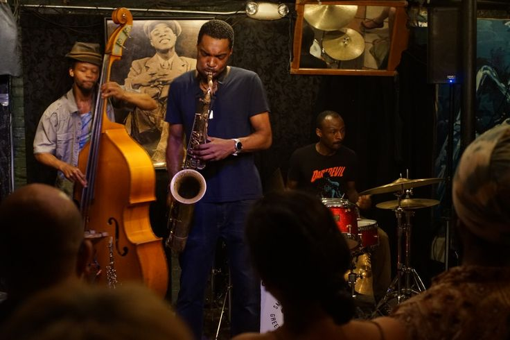

UM UNIVERSO DE POSSIBILIDADES
Todo mundo tem
um som para
descobrir.
Das primeiras notas às novas paixões. Explore nossos instrumentos e encontre o seu jeito de fazer música.
Encontre seu instrumentoSua próxima descoberta começa aqui.

APRENDA. EXPERIMENTE. SINTA.—instrumentos para explorar
—famílias musicais
—disponíveis agora
Um instrumento.
Infinitas possibilidades.
EXPLORE O CATÁLOGO
Qual é a sua vibe?
Um novo som pode estar
mais perto do que você imagina.
Preparando seu catálogo… O primeiro acesso carrega o Python e pode levar alguns instantes.
Está demorando?
Confira sua conexão com a internet. Abra a página por um servidor HTTP local (Live Server ou python -m http.server), aguarde o download do PyScript e recarregue se necessário.
Aguardando catálogo
Ainda não encontramos esse som.
Tente outro nome, estilo musical ou família de instrumentos.
POR TRÁS DAS NOTAS
Música, dados
e descobertas.
Um catálogo acadêmico interativo da escola fictícia Musicalia, com dados de demonstração. Os status não representam reservas reais.
Como funciona a análise vetorial?
Representamos cada instrumento por quatro descritores didáticos: acústico, rítmico, melódico e polifônico. A norma euclidiana resume a magnitude desse vetor. Eles foram definidos manualmente e não são gerados por um modelo treinado. A norma não é uma nota de qualidade.
Abra um instrumento para ver o vetor e seu cálculo.
Telemetria desta sessão
As métricas ficam somente na memória desta aba e são apagadas ao recarregar. Os termos de busca não são armazenados ou enviados.
- Buscas
- 0
- Filtros
- 0
- Detalhes
- 0
- Bloqueios
- 0
Nenhuma interação nesta sessão.
Imagens e referências
Seleção visual encontrada no Pinterest. As imagens ilustram o catálogo e não representam o acervo real de uma escola.